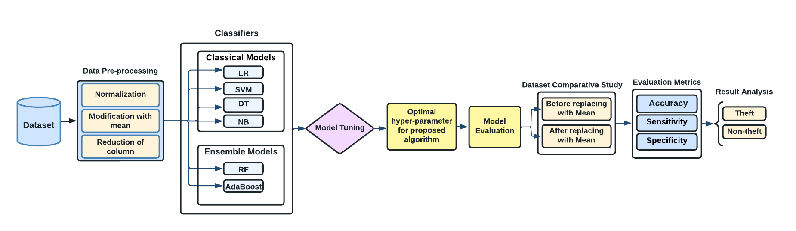
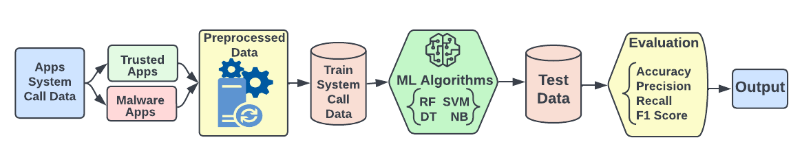
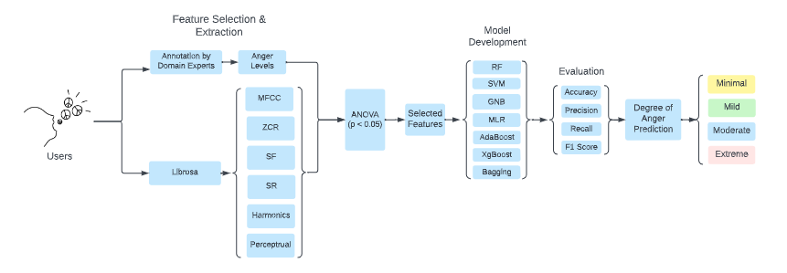
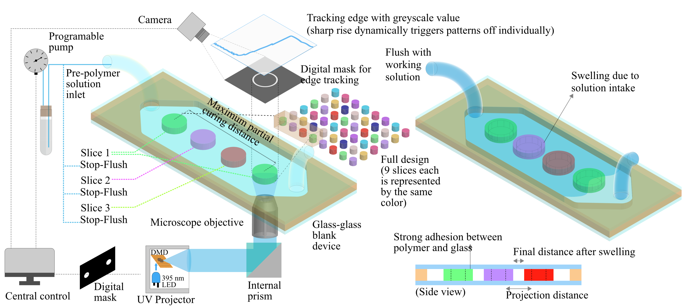

Research
-
Electricity Theft Detection Employing Machine Learning Algorithm
 Electricity theft is one of the biggest problem for smart grids. As a result of the reliance of current procedures on certain equipment, it cannot be easily detected. Additionally, the techniques don’t effectively extract useful information from highly dimensional power usage data, which raises the incidence of false positives and restricts their output. For this reason, we intend to develop a model that can distinguish between legitimate customers and those who are committing power theft by tampering with electricity meters or by other means. Prepaid users will be the ones we test the most for this, along with their long-term monthly bill history. We will classify them based on their regular bills and any notable changes to those bills, and then further categorize them into customers who are genuine and those who are responsible for fraud and theft. In order to discover the power theft and stop additional losses to the grid, we will use many approaches based on various algorithms and models before deciding which one is the most effective, conserving electricity from waste and preventing economic loss at the same time.
-
Analyzing Malware from System Calls by using Machine Learning
 The popular open-source operating system Android is quite vulnerable to malware threats. To identify malicious programs, researchers have created machine-learning models that learn from features retrieved using static or dynamic techniques. Due to the inclusion of noisy features generated from traditional feature selection techniques, these models have a low detection accuracy. Therefore, to increase malware apps' identification and precise categorization, the conventional feature selectors such as ML, GSS, and DFS are employed and initially carried out giving each system call a binary score. Machine learning models can be applied to handle this. By using machine learning methods such as Random Forest, Support Vector Machine, Decision Tree, Naive Bayes Classifier, Extreme Gradient Boosting, K-Nearest Neighbors, and Adaptive Boosting we have proposed a method of analyzing the Android Malware Detector using these binary scores of system calls. Additionally, the models' performance was assessed using the metrics accuracy, precision, recall, and f1 score by examining the learning rate where Decision Tree outperformed with 98.5 % accuracy.
-
Degrees of Anger Prediction from Speech
 In recent times, a huge body of research has been conducted for speech processing applications, particularly speech recognition. However, a few studies have been found to predict users’ anger (i.e., yes/no) from their speech. In this study, we predict users' degrees of anger (i.e., minimal, mild, moderate, and extreme) based on their speech which has not been studied yet. We apply different machine learning-based approaches for obtaining better accuracies. We extract important features from speech and apply a feature selection technique. We apply machine learning models like Support Vector Machine (SVM), Gaussian Naive BayeS (GNB), and Multinomial Logistic Regression (MLR) along with ensemble models like Random Forest (RF), Extreme Gradient Boosting (XGBoost), Adaptive Boosting (AdaBoost), and Bagging to predict the degrees of anger from speech. Among the models we have used, XGBoost demonstrates a F1 score of 93.2\% which outperforms the state-of-the-art models. To the best of our knowledge, this is the first attempt to predict the distinct degrees of anger of a person by using his speech sample unlike the frequently used binary classification of anger states in the previous works.
-
Optimized Energy Consumption & Resource Allocation of Green Clouds: A Survey
The growth in cloud computing has led to huge amounts of energy consumption for data processing, storing & communications which isn’t economical for our environment as it releases vast amounts of C02. So, in the recent years green cloud computing has come into discussion & became a significant area of research. The goal is to reduce the energy consumption & optimize the resources of clouds properly. Additionally, CPU utilization techniques, VM consolidation, and performance efficiency have also been taken into consideration to have a greener, faster & safer cloud computing environment. The purpose of this paper is to survey the existing literature on optimized energy consumption and resource allocation for green clouds and to identify the key issues that have been researched and applied. It highlights recent work, provides a broader perspective of the area and suggests future areas of potential research, as well outlining open questions. The rest of the survey covers Summary of Findings and comparison between different algorithms used in a reviewed paper based on scheduling parameters. Our paper also explores the Challenges, Opportunities and Future Scopes for optimized energy consumption and resource allocation.
-
Automated Microfluidic Fabrication Platform Using Flask (Python Backend) by Image Processing and Hardware Control
